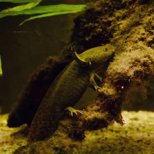

Critically Endangered
10-15 years
Less than 1 km/h
60-200 grams (2-7 oz)
15-45 cm (6-18 inches)
The Axolotl (*Ambystoma mexicanum*) is a unique aquatic salamander native to lakes near Mexico City, such as Lake Xochimilco. Unlike most amphibians, the axolotl remains in its larval stage throughout its life, a condition known as neoteny. It is renowned for its extraordinary ability to regenerate body parts, including limbs, spinal cord, heart, and even parts of the brain. Axolotls are carnivorous, feeding on small aquatic creatures like worms and insects. Sadly, they are critically endangered in the wild due to habitat destruction and water pollution.